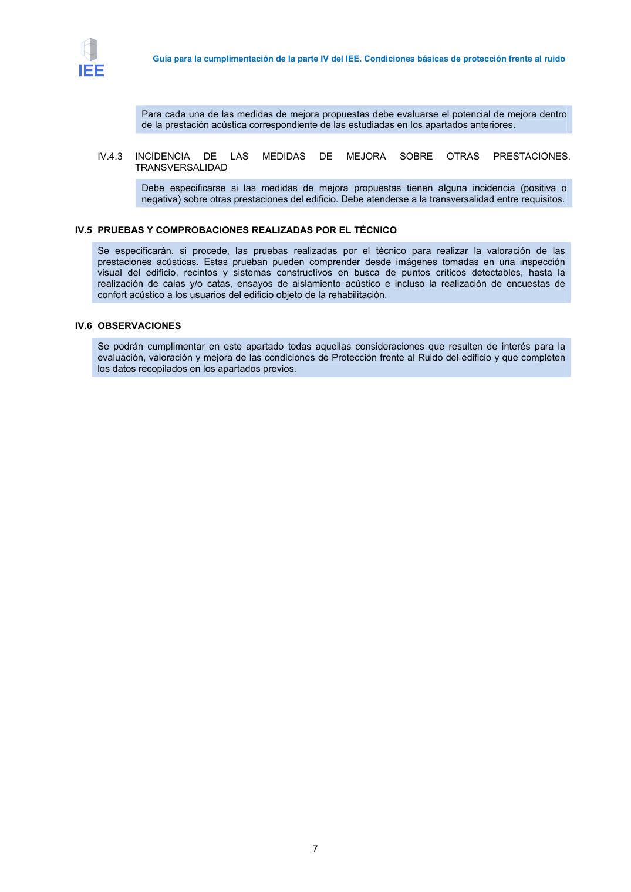

GUIA · Estructura de la parte IV del IEE · versión 2016-11-01 · capa guia
Formatos: JSON compacto · Markdown · PDF fuente
Ámbito del documento · texto del ámbito · documento y tablas
Tipo: referencias, tablas, figuras · nivel 3 · sección estimada: Anejo 3. Valoración del aislamiento acústico de elementos de separación horizontales y sus mejoras · padre: a0003
Estructura de la parte IV del IEE A continuación se recoge una breve descripción de cada uno de los apartados de la parte IV del IEE: IV.0 INTRODUCCIÓN IV.1. DATOS GENERALES DEL EDIFICIO (Según CTE-DB-HR) Ubicación del edificio y tipo de afección de ruido. Distribución del edificio IV.2 CONDICIONES DE PROTECCIÓN FRENTE AL RUIDO (Según CTE-DB-HR) Evaluación de diferentes aspectos de la acústica del edificio según el tipo de ruido y el tipo de elementos constructivos implicados IV.2.1 RUIDO EXTERIOR Fachadas y cubiertas del edificio IV.2.2 RUIDO INTERIOR (Particiones verticales) Elementos de separación verticales entre viviendas o con zona común y los tabiques. IV.2.3 RUIDO INTERIOR (Particiones horizontales) Elementos de separación horizontales (forjado, suelo flotante y techo suspendido) IV.2.4 RUIDO INTERIOR (Uniones) Formas de unión entre elementos constructivos. IV.2.5 RUIDO DE INSTALACIONES / RECINTOS DE ACTIVIDAD Recintos de instalaciones y de actividad, equipos y redes de instalaciones. IV.3 VALORACIÓN FINAL DE LAS PRESTACIONES BÁSICAS DE PROTECCIÓN FRENTE AL RUIDO Para cada uno de los apartados estudiados previamente (ruido exterior, ruido interior y ruido de las instalaciones) debe establecerse una valoración en términos de “Bueno”, “Razonable”, “Regular” y “Deficiente”. IV.4 RECOMENDACIONES PARA LA MEJORA DE PROTECCIÓN FRENTE AL RUIDO Si el edificio así lo requiere deben proponerse aquellas medidas de mejora de las condiciones acústicas que se consideren necesarias. IV.4.1 MEDIDAS DE MEJORA Descripción de cada una de las medidas de mejora propuestas: descripción técnica, valoración económica, etc. IV.4.2 POTENCIAL DE LAS MEDIDAS DE MEJORA Guía para la cumplimentación de la parte IV del IEE. Condiciones básicas de protección frente al ruido 7 Para cada una de las medidas de mejora propuestas debe evaluarse el potencial de mejora dentro de la prestación acústica correspondiente de las estudiadas en los apartados anteriores. IV.4.3 INCIDENCIA DE LAS MEDIDAS DE MEJORA SOBRE OTRAS PRESTACIONES. TRANSVERSALIDAD Debe especificarse si las medidas de mejora propuestas tienen alguna incidencia (positiva o negativa) sobre otras prestaciones del edificio. Debe atenderse a la transversalidad entre requisitos. IV.5 PRUEBAS Y COMPROBACIONES REALIZADAS POR EL TÉCNICO Se especificarán, si procede, las pruebas realizadas por el técnico para realizar la valoración de las prestaciones acústicas. Estas prueban pueden comprender desde imágenes tomadas en una inspección visual del edificio, recintos y sistemas constructivos en busca de puntos críticos detectables, hasta la realización de calas y/o catas, ensayos de aislamiento acústico e incluso la realización de encuestas de confort acústico a los usuarios del edificio objeto de la rehabilitación. IV.6 OBSERVACIONES Se podrán cumplimentar en este apartado todas aquellas consideraciones que resulten de interés para la evaluación, valoración y mejora de las condiciones de Protección frente al Ruido del edificio y que completen los datos recopilados en los apartados previos. Guía para la cumplimentación de la parte IV del IEE. Condiciones básicas de protección frente al ruido 8


PDF fuente redistribuible: copia fiel enlazada en esta página (SHA256 verificado).